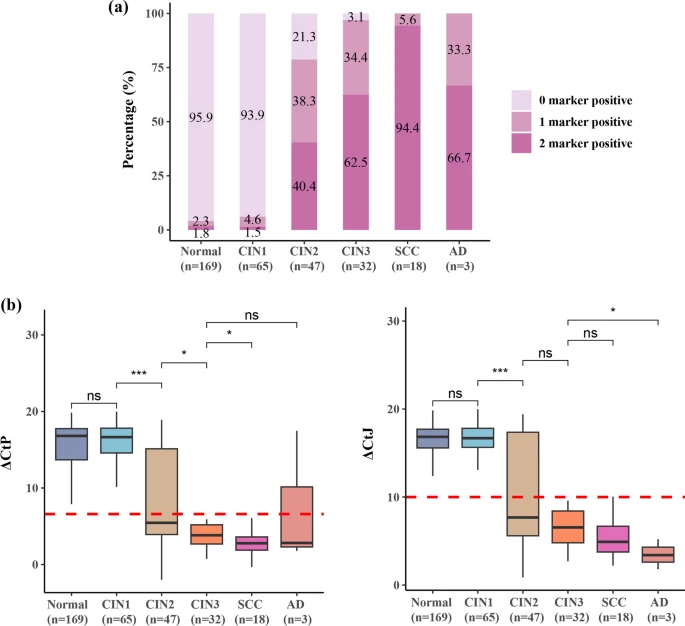

1Background & Objective
- Problem: HPV16/18 cause ~70% of cervical cancer, but most infections are transient — immediate colposcopy for all causes over-referral.
- Triage gap: cytology-based triage inaccurate in this group; WHO suggests emerging triage technologies.
- Objective: evaluate CISCER® PAX1/JAM3 methylation for triaging HPV16/18+ women.
2Study Design & Cohort
334
HPV16/18+ women
36y
median age
100
CISCER(+)
HPV16/18 genotyping+
CISCER methylation+
colposcopy + cytology
- Setting: Zhejiang Univ. 2nd Hospital, Nov 2021 – Dec 2022; HPV16 245 · HPV18 77 · both 12.
- Histology: normal 169 · CIN1 65 · CIN2 47 · CIN3 32 · cancer 21.
- Compare: CISCER vs cytology vs combination for triage (CIN2+).
- Genotypes: HPV16 245 (73.4%) · HPV18 77 (23.0%) · both 12 (3.6%).
78.7%
CIN2 · ≥1 marker +
96.9%
CIN3 · ≥1 marker +
100%
Cancer · CISCER +
169
normal
65
CIN1
100
CIN2+
CIN2+ prevalence: HPV16 34.6% vs HPV18 16.9% (P=0.005).
3Diagnostic Performance — CIN2+
89.0%
Sensitivity
95.3%
Specificity
0.921
AUC (0.877–0.966)
164.0
OR (68.6–391.9)
| Test | Se % | Sp % |
|---|---|---|
| CISCER | 89.0 | 95.3 |
| PAX1m | 75.0 | 96.6 |
| JAM3m | 72.0 | 97.0 |
| Cytology ≥ASC-US | — | — |
CIN3+: CISCER Se 98.1%, Sp 82.9%, AUC 0.905, OR 252.4.
4Methylation Signal & Se/Sp

Fig. 2 Methylation rises with grade — CIN3: 96.9% ≥1 marker positive; cancer 100%.
Fig. Se vs Sp by test (Table 2) — CISCER best balance; single genes highest Sp.
5Referral & Cancer Safety
89.0%
CIN2+ risk if CISCER(+)
vs cytology ≥ASC-US 38.3% — 2.3× higher
vs cytology ≥ASC-US 38.3% — 2.3× higher
1.12
Referrals per CIN2+ detected
~70% fewer colposcopies vs direct referral
~70% fewer colposcopies vs direct referral
- Cancer safety: 21/21 cancers · 96.9% CIN3 · 78.8% CIN2 detected; ≥30 y: no CIN3+ missed.
CISCER+cytology raises referrals to 2.31/CIN2+ — no added triage value.